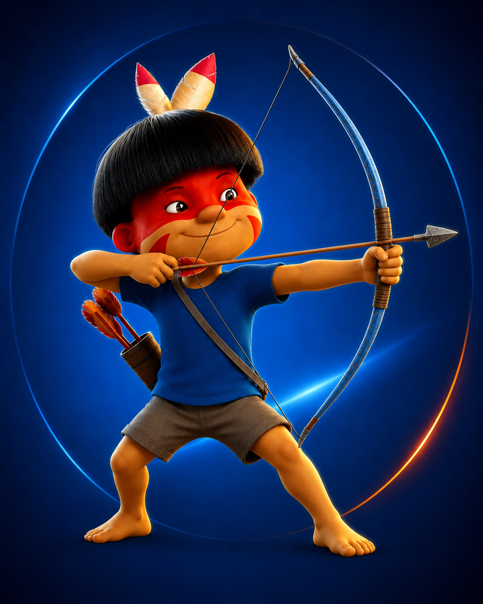

Quem Somos
A Fúria Flecha é a torcida organizada oficial do Vôlei Guarulhos. Nascida da paixão pela cidade, pelo esporte e pelas nossas Flechas, a torcida representa a força da arquibancada dentro e fora do Ginásio da Ponte Grande.
A Fúria Flecha surgiu para unir os torcedores que acompanham o crescimento do Vôlei Guarulhos e transformar cada jogo em uma verdadeira festa. Desde os primeiros passos do projeto até a consolidação da equipe na elite do voleibol nacional, a torcida esteve presente apoiando, incentivando e defendendo as cores de Guarulhos.
Mais do que torcer, a Fúria Flecha carrega o orgulho de representar uma cidade inteira.

Conquistas
Ao lado do Vôlei Guarulhos, a Fúria Flecha celebrou momentos marcantes da nossa trajetória:
A ascensão do projeto ao cenário nacional
A presença do clube na Superliga
O título do Campeonato Paulista masculino de 2023
A permanência do time em Guarulhos em momentos decisivos
A consolidação do Ginásio da Ponte Grande como a casa das Flechas
Cada vitória dentro de quadra também é uma vitória da arquibancada.
Diferencial
O diferencial da Fúria Flecha está na energia, na união e na identidade guarulhense. Somos uma torcida que apoia o time do primeiro ao último ponto, incentiva as categorias de base e fortalece a conexão entre clube, cidade e comunidade.
A Fúria Flecha é presença, voz, bandeira, canto e coração.
Ser Fúria Flecha é acreditar no projeto, vestir a camisa e fazer parte da história do voleibol de Guarulhos.
Aqui, cada torcedor é mais que espectador: é parte do jogo.
Nós somos Guarulhos.
Nós somos Fúria Flecha.
Vai, Flecha!